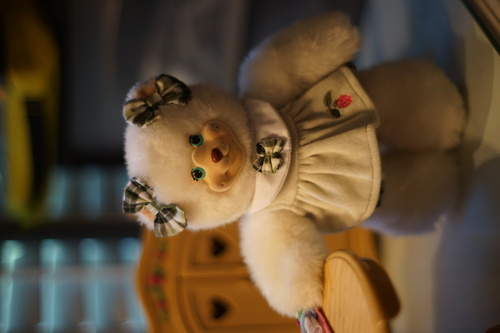
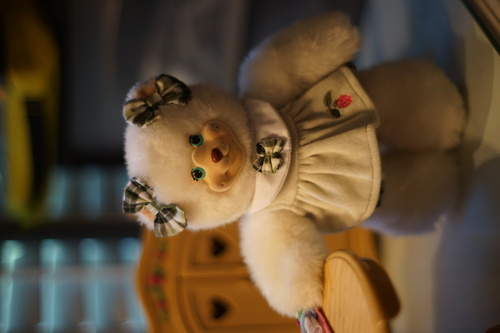

I spent most of September at my mom's house. I didn't forget Cheby and Liam's birthdays this year! I just didn't have those two with me ;_;
My mom is one of those people who keeps everything, including every toy I've ever owned. Over the past few years, I've put a lot of effort into organizing the basement, where all of my childhood toys were thrown into a box and tossed.
I started out looking for the obi to a Licca chan kimono and the battery cover to my Gameboy Color. I have not found either of those yet.
During my organizing, I was sorting tons of plastic playsets and one in particular had a design that really stuck out to me. The pieces were all plastic wood with leaf and berry motifs. All of them were marked F-P 98, so I went searching online for more info on them.
I had no idea these were created as furniture for a set of bears! I didn't remember the bears at all! Fisher Price introduced the Briarberry Collection in 1999 and luckily, This Old Toy has compiled all the items released in the original set.
The face design of the bears leave a little to be desired, but are still cute because of their small size. I personally would have executed the design differently and if you would like more of my opinion on how to create mass producable bears with outfit sets, I am available for hire.
I first uncovered Berrybeth, the little white bear. I started picking out clothes with the raspberry design embroidered on them. They're fairly easy to spot because of the velour fabric and plaid printed cotton, which doesn't seem to be on any of my other late 90s or early 2000s toys. The clothes are very cutely designed!
After finding all the pieces I could identify as part of the set, I went back to This Old Toy and wrote down every piece in the sets I had any parts of in a notebook. One dress I had belonged to Berrylynndon, who is not on this site because she was a later release. It took a long time, but I managed to find everything I put on my list except 2 ear ribbons.

As expected for toys owned by a child, everything was pretty gnasty. I was worried about the bears because their faces are flocked, but washing went mostly well! I had each bear in a laundry bag and together in another laundry bag on the gentle cycle. The flocking was not damaged, though the dark areas remained. One dress had a stain that wasn't removed in this was or the next wash. I'll have to keep working on that one.
After the wash and a lysol wipe down of the plastic, I set up my bears!
 

I ended up with almost all of the original bear outfit sets somehow! I suspect my mom also thought the little bears were very cute. There are even 2 sailor outfits, so Berrybeth and Berrylynndon can twin!!
I can't believe how great the Briarberry line is. If this was being released today, I would be shopping in the baby toy aisle collecting every outfit for my little bear.
I am proud to announce that I have completed the toy organization and everything is in a labeled box now. It was a serious effort! And you wouldn't believe how much candy was scattered through it...

A very rare book buy for myself. I swear to god, I WILL read Cupid and Psyche!!!
Marked 1997, with tag.
Here it is, the big event you've all been waiting for: my first yard sale haul. My next door neighbors had a yard sale before they moved and my dad had let me wander next door alone. This is what my mom says I came home with.
It looks like an animal cage, so I kept my pet stuffed animal in it. It's actually a really cool basket!
Not a plushie. The fur is glued over the papery base. I've had this hanging in my room ever since.
How did the ends of this get so fried?!
Now broken. I assume it wasn't broken at the time! The music stand is snapped and the foot pedals are disconnected. I wonder if there was a bench at some point?
I likely paid in a very cute smile for all these items! I promise you, I was very cute!